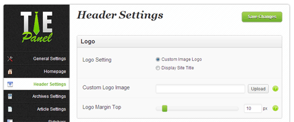
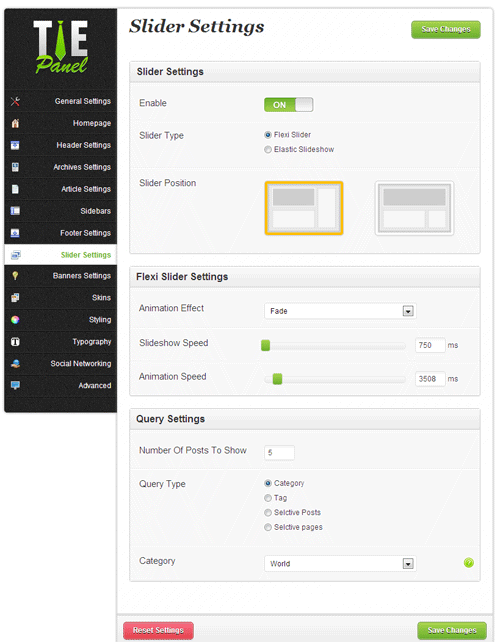
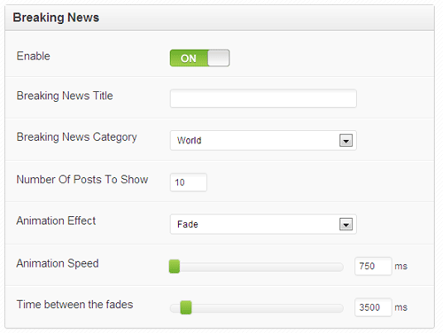
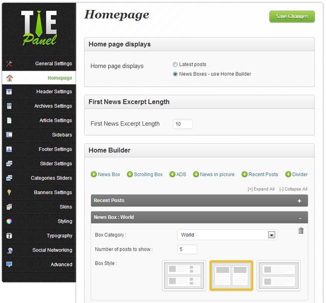
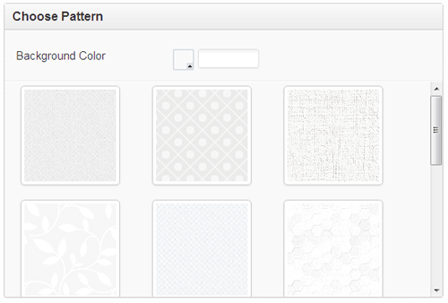
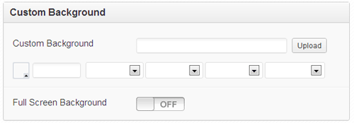
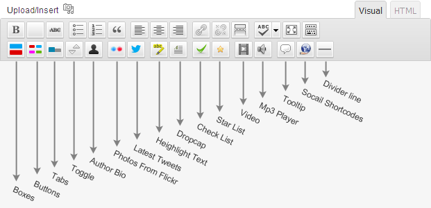

Sahifa WordPress Theme
By TieLabs
Thank you for purchasing my theme . Please read this document and explore the item comments and FAQ items for further information and help.
For questions on basic WordPress installation/usage, HTML, JavaScript or CSS editing - please try the ThemeForest forums, W3Schools, the Wordpress Codex or Google as theme errors/issues get top priority.
Don't Forget If You Like It, Rate It !
Installing Sahifa Theme
Uploading Sahifa via FTP to Wordpress
-
Download the zipped theme pack to your local computer from themeforest and extract the ZIP file contents to a folder on your local computer.
- In the extracted folder you will find 'sahifa.zip' Extract this file .
-
Using an FTP client to access your host web server
-
Upload the Theme files in the extracted folder called 'sahifa' to wp-content/themes directoryprovided by WordPress.
-
Visit Administration > Appearance > Themes, under the Manage Themes tab, under the Available Themes, if necessary navigate to the page displaying that Theme, then click the Activate link to make the Theme, the Current Theme.
Installing Sahifa from the WordPress Dashboard
- Download the zipped theme pack to your local computer from themeforest and extract the ZIP file contents to a folder on your local computer.
- Log into your WordPress admin panel and click on the “Appearance” tab.
- Now click on the "Add New Themes" tab.
- Click on the "Upload" button, "Browse" for file called sahifa.zip In the extracted folder select "Open".
- Click the "Install Now" button.
- Activate the theme from this page, OR "Return to Themes Page" and activate from there
Add House Icon To main Navigation
To create a custom navigation menu:
-
Go to Appearance > Menu
- In the Custom Links Block add your full blog url in the URL input field .. don't forget http://
- Add any text in the Label input field .. for example add 'Home'
- Click on 'Add To Menu' Button
- Click "Save Menu"
Setting Up Logo
-
Login to Wordpress Admin
-
Click Sahifa Theme Options
-
Click the Header Settings Tab .
-
Click upload .
-
Select your logo image to upload.
-
Once uploaded click "Use this image" .
-
Make sure you’ve selected "Full image" for the image size.

Setting Up The Slider
To enable the slider:
-
Login to Wordpress Admin
-
Click Sahifa Theme Options
-
Click the Slider Settings Tab .
-
Check "Enable" under the Slider Settings
-
Choose Slider Type Flexi Slider or Elastic Slideshow .
-
Choose Slider Position
-
You may display either WordPress Posts or custom upload images in the slider:
-
Set animation , slider speed etc as you want .
-
Choose the Query Post to get Wordpress posts.
-
To display Posts from Category, set Query type as Category then select a category in the dropdown menu
-
To display Posts by tag, set Query type as Tag then Enter a tag name, or names seprated by comma in the tags input field .
-
To display Selective Posts , set Query type as Selective Posts then Enter a post ID, or IDs seprated by comma in the Selctive Posts IDs input field .
-
To display Selective Pages , set Query type as Selective Pages then Enter a page ID, or IDs seprated by comma in the Selctive pages IDs input field .

Breaking News Module
To enable the Breaking News Module:
-
Login to Wordpress Admin
-
Click Sahifa Theme Options
-
Click the Header Settings Tab .
-
Check "Enable" under the Breaking News Settings
-
Enter Breaking News Title or leave it blank to use default one.
-
Choose the category and number of posts to show .
-
Set animation , slider speed etc as you want .

Homepage Builder
To Customize Your HomePage:
- Login to Wordpress Admin
- Click Sahifa Theme Options
- Click the Homepage Tab .
- Set Home page displays as 'News Boxes - use Home Builder' .
- Begin to build yor home page by click on items like 'News Box' , 'Scrolling Box', 'Ads' .. etc boxes will appear in area below you can sort it and change setting .

Overlay Patterns
To set pattern for the background.
- Go to Sahifa > Styling tab .
- Set Background Type as pattern .
- Set the background color .
- Select any of the patterns for the background image.

Setting Up a Background
- Login to Wordpress Admin
- Click Sahifa Theme Options
- Click the Styling Tab .
- Set Background Type as Custom Background .
- Click upload .
- Select your Background image to upload.
- Once uploaded click "Use this image" .
- Make sure you’ve selected "Full image" for the image size.
- Set other options as you want .
- If you want to display the image as full background check 'Full Screen Background' .

Full Width Page/Post
In post edit page , Select 'full Width' image from Sidebar Options As shown in below screenshot.
Shortcodes Gui
Shortcodes make it simple to insert elements like buttons, boxes, columns etc. without any knowledge how to code HTML. Shortcodes work in posts and pages .

Credits
Thanks so much to
- jQuery
- jQueryUI
- jQuery Easing plugin
- jQuery Cycle plugin
- jQuery InnerFade plugin
- jQuery tipsy plugin
- jQuery tweet! plugin
- jQuery Scroll to Top Control
- jQuery Tools Tabs
- jQuery COLOR PICKER plugin
- jQuery checkbox plugin
- Flexslider
- ELASTIC IMAGE SLIDESHOW
- Html5Shiv
- selectivizr
- Webfonts with Google fonts
- Timthumb
- jPlayer
- WP-PageNavi Plugin
- Socail icons by Yusuke Kamiyamane
- Subtle Patterns
- Documenter
- Premium Pixels
- Some patterns
- Photos used in the demo site from :
UGArdener,
law_keven,
midlander1231,
eldeeem,
Alex Millà,
Stuck in Customs,
Eduardo Amorim,
paul bica,
bulbocode909,
Per Jensen,
Neal.,
photos.dan2010,
Kalexanderson,